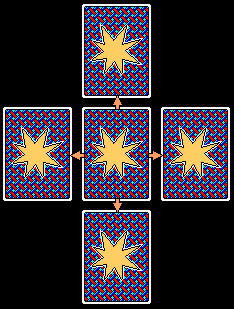

Rules for
The RPG Card Game for one player
By Luc Miron
Welcome! This page describes the rules of a card game that I created years ago. The length of this text might give you the impression that it's a complicated game, but as you will see, the basic rules are quite simple. You may come across similar card games elsewhere, but I must say that I created this game without drawing any inspiration from any other card game. I hope that my game will provide you with hours of fun!
Table of contents
- Introduction
- Object of the game
- Required material
- Preparation of the game
- Main rules
- Enemy cards
- Treasure cards
- Rules for battles
- Spells
- Rules for trading with other adventurers
- Value of treasure cards for a black magic priestess
- Strategies
- Game variations
Introduction
Many entered, but few ever came out alive. Looking down from his sky palace, Hebrac, the legendary sorcerer, keeps on tempting mankind with the Dungeon that he created with his unrivaled magical powers.
This Dungeon, which began as a simple exercise of Hebrac to relieve his boredom, became a deadly game where the players are the most courageous adventurers of the world, and the goal of this game is to find the four magical treasures that would turn their owner into one of the most famous heroes in history.
But the road to glory is dominated by the blood-thirsty creatures that inhabit the Dungeon. Only the strongest, smartest and most courageous can ever hope to survive the many battles and traps that await them.
Armed with a sword, an empty bag and a strong level of vitality - which you acquired after many years of intense training - you are now at the entrance of the Dungeon, after a long trip. What adventures will you live through in the Dungeon?
Object of the game
To find the four magical treasures, namely the four aces (of spades, hearts, diamonds and clubs).
Required material
Two (or more) decks of cards (jokers are not really required, but having them is preferable), a piece of paper and a pencil. It is recommended to play on a large table, like a kitchen table, for instance. You should also keep a copy of the rules close by, as a reference tool.
Preparation of the game
Write down 15 at the top of the piece of paper. This will be your maximum number of life points, and you cannot exceed this maximum during the game, unless you find the Ruby of Gaza (the ace of hearts) or a Genie of Life (the king of hearts) which increase this maximum.
Shuffle the cards, then place three rows of four cards on the table, face down, like this:
Place a second card, face down, over each of the 12 cards already on the table, like this:
Keep the rest of the cards in your hands, face down also, or place them in front of you, on the table, in a single pile. This stack of cards will be called the Hand Deck for the remainder of this text.
Main rules
Each pair of cards represents a chamber of the Dungeon. The bottom card is the treasure located in the chamber, and the top card is the human or creature that guards the treasure.
NOTE: For the remainder of this text, the term treasure card will designate the bottom cards, and the term enemy card will designate the top cards placed over the treasure cards.
Start by selecting one of the four corners of the Dungeon. Turn the enemy card over to see the opponent (if applicable) who is waiting for you in the chamber. Through a battle, a trade or another action, your goal is to acquire the treasure in the chamber. YOU ARE NOT ALLOWED to turn over (or to take) the treasure card until the character guarding the treasure is permanently out of your way (unless you use the Stealing Spirit or God Vision spells - see the "Spells" section for further details).
Once you've cleared the chamber and grabbed the treasure, you can only move to a chamber next to the current chamber, or to a chamber which is adjacent to a chamber you've already visited. Once all the chambers have been cleared, you must continue your journey by placing 24 new cards on the table (12 treasures and 12 enemies).
NOTES: You are allowed to go to the next level of the Dungeon as soon as you've cleared half of the chambers on the current level.
Throughout the game, used cards (like defeated enemy cards, or treasure cards that have been used) must be placed under the Hand Deck.
The game ends as soon as you find the four aces, or when you've lost all your life points, which means death.
Enemy cards
When you venture into a new chamber, by flipping over the enemy card of the chamber, YOU CANNOT FLEE. Unless you use an Escape spell or a Stealing Spirit spell, you MUST deal with the character inside the chamber and take the treasure card.
Most of the characters that you will encounter are creatures who will fight you without mercy. However, certain characters can be dealt with without having to attack them. Here is the complete list of all the enemy cards:
- Ace
- If you find an ace as enemy card, this means that the chamber is empty, and you can grab the unguarded treasure card immediately and continue your journey.
- 2 to 10 of spades
- These characters are mercenary warriors working for Hebrac. You must fight them according to the rules described in the "Rules for battles" section.
- 2 to 10 of hearts
- These characters are warrior amazons. You must fight them according to the rules described in the "Rules for battles" section.
- 2 to 10 of clubs
- These characters are evil magicians who attack with offensive spells. You must fight them according to the rules described in the "Rules for battles" section.
- 2 to 10 of diamonds
- These characters are demons summoned by Hebrac from another dimension. You must fight them according to the rules described in the "Rules for battles" section.
- Jacks
- Jacks are fellow adventurers who are looking for the four legendary treasures
(a.k.a. the four aces), just like you. When you face another adventurer, you
have two choices:
- You can attack him immediately (following the rules described in the "Rules for battles" section) in order to obtain his treasure card. All adventurers have 10 life points.
- You can propose a trade with the adventurer. See the "Rules for trading with other adventurers" section to know more about trading.
- Black queens
- Queens of spades and clubs are black magic priestesses. They're also incorrigible kleptomaniacs! At the speed of light, they use a Stealing Spirit spell (it's their specialty) to steal your most valuable treasure (among the treasure cards you have stored in your inventory) and disappear before you can draw your sword.
- It is impossible to attack a black magic priestess. You can only drop your most valuable treasure card (see the "Value of treasure cards for a black magic priestess" section to know which card to drop), take the treasure card found in the chamber, and then continue your journey.
- Red queens
- Queens of hearts and diamonds are white magic priestesses. To the opposite of most of the other characters, they are peaceful and generous. Hebrac must have found it amusing to put such characters in his otherwise dangerous Dungeon...
- White magic priestesses give you two choices: They can cure your injuries (and restore your life points to their maximum) or they can give you the treasure card located in the chamber. You cannot attack a white magic priestess, nor can you use a spell on her. You can only choose between the full recovery or the treasure card. If you select the recovery, the priestess will restore all your life points, and then disappear with the treasure card (you must put the two cards under your Hand Deck).
- Kings
- Kings represent wandering merchants, who appear to be harmless. You can only ask yourself why these characters would roam the Dungeon, and it seems evident to you that they are not humans, but rather disguised creatures under Hebrac's command. Nevertheless, you cannot attack them.
- Merchants can sell the chamber's treasure card to you, provided you can pay for it. Flip over the treasure card, and determine its price by looking it up in the "Treasure cards" section. If you wish to buy the treasure, you must pay the price using gems (a.k.a the cards of diamonds) stored in your inventory. If you refuse to buy the treasure, either because you're not interested or because you don't have enough gems, slip the enemy card and the treasure card immediately under your Hand Deck. If you don't have the exact number of gems required, you can give more gems than the merchant asks for, but as you can guess, he won't give you your change.
- Note that you can also use a Stealing Spirit spell to grab the merchant's treasure without paying for it. If you do this, the merchant will simply disappear, so you can put him back under your Hand Deck.
- SPECIAL CASE: If the treasure card of the merchant is a card of diamonds (in other words, a bag of gems), this means that the merchant has already sold his treasure to another adventurer. Unless you want to use a Stealing Spirit spell to grab the merchant's gems, you can't do anything else than putting the enemy card and the treasure card under your Hand Deck.
- SPECIAL CASE: If the treasure card is a queen of spades or a queen of clubs, then no sale can take place, because you're not stupid enough to buy a black magic priestess. Just put both the enemy card and treasure card under your Hand Deck and move on to the next chamber.
- Joker
- The joker is none other than Hebrac himself! Appearing before you like a specter, he dares you to play a game as simple as it is dangerous: Take the card on top of your Hand Deck and turn it over. If it's a red-colored card (hearts or diamonds), you can take the treasure card located in the chamber. If it's a black-colored card (spades or clubs), you immediately loose 5 life points, and Hebrac disappears along with the treasure (place the joker and the treasure card under your Hand Deck).
- Note that you can refuse to play Hebrac's game. In that case, you must put the joker, as well as the treasure card, under your Hand Deck, and move on.
Treasure Cards
Each treasure card that you find is added to your inventory. These items can be useful in many situations. Here is the list of all the treasures, and what you can do with them.
- Ace of hearts: The Ruby of Gaza
Price: 12 gems - This magic ruby increases your life point MAXIMUM by 5 points. Keep in mind that if a black magic priestess steals the ruby from you, you will have to subtract these 5 extra points from your maximum.
- Ace of diamonds: The Bag of Meres
Price: 12 gems - This magic bag contains an infinity of gems. As soon as you find it, you will be able to buy any treasure card from any merchant without spending your gems (in other words, your cards of diamonds) that you have in your inventory. You can also perform trades with other adventurers in the same way. For all practical purposes, your cards of diamonds become useless (but you should keep them in case a black magic priestess steals the Bag of Meres away from you).
- Ace of spades: The Bracelet of Armok
Price: 12 gems - This magic bracelet adds 3 points to all your attacks, while you are engaged in battle.
- Ace of clubs: The Scepter of Leynos
Price: 12 gems - This scepter acts like a "magic magnet". It draws magic from all around you,
and helps increase the power of your spells. While the scepter is in your
possession, all your magic points are doubled. For example, a 5 of clubs, as a treasure card, is worth 10 magic points!
SPECIAL NOTE CONCERNING THE ACES: Since this game requires at least two decks of cards, you may find an ace (as a treasure card) that you already have in your inventory. If this happens, you must consider the second ace to be a fake, and place it immediately under your Hand Deck. The other ace stays in your inventory. -
2 to 10 of hearts: Life potions
Price: 1 gem per life point - These treasure cards are life-restoring potions that heal your wounds. You can add the number of life points specified on the card to your current total of life points, without exceeding your maximum number of life points. For example, if you have 5 life points left and decide to use a 6 of hearts, you can raise your life points to 11 (5 + 6 = 11). You can use life potions at any time, even during a battle.
- 2 to 10 of diamonds: Gems
Price: N/A - These treasure cards are gems. The number on the card specifies the number of gems. You can use these gems as currency to buy treasure cards from merchants, and also to do trading with other adventurers.
- 2 to 10 of spades: Strength potions
Price: 1 gem per strength point - These treasure cards are strength potions that
increase the power of your attacks during battle. You MUST use a strength
potion BEFORE you execute your next attack. By drinking the potion, you
can add the number of points specified on the card to the score printed
on your next attack card. For example, if you
use a potion of 4 magic points (a 4 of clubs) just before drawing a 6 of
hearts from your Hand Deck as an attack card, you attack is worth 10 points
(6 + 4 = 10).
You can only use a strength potion once, and its effect only last for one single round of battle. You must place the strength potion under your Hand Deck immediately after using it. - 2 to 10 of clubs: Magic potions
Price: 2 gems per magic point - These treasure cards are magic potions. They allow you to perform all kinds of spells. Please refer to the "Spells" section for further details. (Reminder: you can only do one spell per battle.)
- Jacks: Prisoners
Price: 8 gems - Jacks, as treasure cards, are adventurers who were captured by the Dungeon's creatures. These prisoners, to thank you for saving them, will agree to follow you and assist you during ONE of your upcoming battles. More precisely, when you ask for the prisoner's help during a fight, you'll be able to add 3 points to each of your attacks for the entire duration of a battle. After the battle, however, the prisoner will leave you and go his own way (you must place the prisoner's treasure card under your Hand Deck). You don't have to use your prisoners right away after finding them. You can keep them in your inventory until you meet a tough opponent.
- Red Queens: White Magic Priestesses
Price: 9 gems - Red queens (of hearts and diamonds), just like with enemy cards, are white magic priestesses. To thank you for setting them free, they heal your wounds before disappearing. You can therefore raise your total of life points to its maximum, and then continue your journey.
- Black Queens: Black Magic Priestesses
Price: N/A - Black queens (of spades and clubs) are black magic priestesses,
and they are
kleptomaniacs, just like their enemy card
counterparts. However, to "thank" you for setting them free, they
steal the treasure card with the least value in your inventory.
Notice the difference: As black magic priestess, as an enemy card, will always steal the MOST valuable treasure card in your inventory. The same back magic priestess, as a treasure card, will always steal your LEAST valuable treasure card.
Please refer to the section titled "Value of treasure cards for a black magic priestess" to identify which treasure card you must drop. When this is done, place the treasure card - as well as the priestess' card - under your Hand Deck and continue your journey. - King of hearts: Genie of Life
Price: 10 gems - The king of hearts is a Genie of Life. He will add 2 points to your MAXIMUM of life points before disappearing. Nothing can take away these 2 extra points.
- King of diamonds: Genie of Luck
Price: 10 gems - The king of diamonds is a Genie of Luck: Draw three cards from your Hand Deck, and add these cards to your inventory,
as treasure cards!
SPECIAL CASE: If you find a queen (of any color) among the three cards that you draw, you cannot store them in your inventory. You must allow them to play their roles immediately, and then place them back into your Hand Deck.
SPECIAL CASE: If you find another king (a.k.a another genie) among the three cards that you draw, YOU CANNOT use this genie. You must place it immediately under your Hand Deck; this card must be regarded as lost.
SPECIAL CASE: If you find a joker (a.k.a Hebrac the sorcerer), you must IMMEDIATELY choose to play (or not to play) the sorcerer's game before you can continue your journey. (Refer to the paragraph relative to the joker, further down this section, to find out more about Hebrac's "game".) - King of spades: Genie of Death
Price: 10 gems - The king of spades is a Genie of Death. He will destroy three enemy cards among those that lie in chambers you have not yet visited on the current level of the Dungeon. Select the three enemy cards and place them under your Hand Deck. THIS DOES NOT ALLOW YOU to collect the treasure cards left unguarded in the empty chambers. You must reach these chambers normally before you can take the treasures.
- King of clubs: Genie of Destiny
Price: 10 gems - The king of clubs is a Genie of Destiny. He will perform a spell of God Vision before disappearing (Refer to the "Spells" section for more information about the God Vision spell.)
- Joker: Hebrac the sorcerer
Price: 2 gems - Here comes the sorcerer again, ready to torment you! Hebrac
invites you to
play the same game than when you find him as an enemy card:
Take the card on top of your Hand Deck and flip it.
If it's a red-colored card (hearts or diamonds), you can pick a card
from your Hand Deck and place it in your inventory as a treasure
card. If it's a black-colored card (spades
or clubs), you immediately lose 5 life points, and Hebrac
disappears.
You can always refuse to play Hebrac's game. In this case, you must place the joker under your Hand Deck and continue your journey.
Notice that if you win Hebrac's game, and obtain a queen or a king as a reward, you cannot store this treasure card in your inventory, since the action of kings (genies) and queens (priestesses) is immediate. The same rule applies if you get another joker as a reward: You then have the possibility to play Hebrac's game again.
Rules for battles
When you engage in battle with an enemy, the number on the enemy card corresponds to his total of life points. For example, a 5 of spades is a warrior with 5 life points. (Reminder: All adventurers (a.k.a. the jacks) have 10 life points).
To attack, flip the card of top of your Hand Deck. This is your attack card. Kings, queens, jacks and jokers are worth 10 points each, aces are worth 1 point, and all other cards have the value printed on them (for example, a 6 of spades is worth 6 points).
If the value of your attack card is equal or greater than the enemy's life points, you win the battle, and you can then place the enemy card (as well as the attack card) under your Hand Deck, and take the treasure card as a reward.
However, if the value of your attack card is less than the total of life points of the enemy, you must subtract the difference of points from your own life points. Here's an example: You're fighting a demon that has 6 life points. If you draw a 4 of hearts as attack card, you must subtract 2 points from your total of life points (6 - 4 = 2). Place the attack card under your Hand Deck before engaging the next round of battle.
You must continue the battle until the enemy is defeated, or until you lose all your life points.
If the enemy is too strong for you, you can use your treasure cards to tip the balance of power in your favor. See the "Treasure Cards" section for further details. (Reminder: You can only use one spell during a battle.)
Spells
Usually, the art of sorcery is not the strong suit of adventurers. It is rather reserved for magicians and certain magical creatures. However, an adventurer can perform spells with the help of magic potions. During your years of training, you were initiated to the secret ways of magic, and you learned some spells which should come in handy in Hebrac's Dungeon.
Magic potions are the cards of clubs (2 to 10 of clubs) in your inventory of treasure cards. The number on the card indicates the level of power of the potion. With a single potion, or by combining potions together, you can accumulate enough magic power to perform impressive spells, and when the spell's action is over, you must place the used-up card(s) of clubs under your Hand Deck.
You don't need to have the EXACT amount of magic points to do a particular spell. For example, you can use an 8 of clubs to perform a Stealing Spirit spell, which normally requires only 6 magic points. However, in that case, the magic points that you don't use are lost.
You can also combine magic potions together to perform a spell. For example, you can combine a 3 of clubs with a 5 of clubs to perform a Levitation spell (which requires 8 magic points). In fact, you need to combine magic potions in order to perform the most powerful spells.
Certain spells can be used at any time, while certain others can only be performed during specific situations. Furthermore, you can only perform ONE spell during the entire duration of a battle. The available spells are described below.
- Remote Vision spell
1 magic point - This spell allows you to peek into any chamber that you haven't explored yet,
to see the dangers that await you: You can turn over any enemy
card, but only long enough to identify the enemy. You must immediately
turn over the card again, and it's up to you to memorize the enemy that you
saw in the chamber.
Notice that this spell does NOT allow you to turn over the treasure card of any chamber. Furthermore, this type of spell can be repeated according to the number of magic points that you invest in it. For example, if you use a 3 of clubs, you can examine 3 different chambers at once. - Future Perception spell
1 magic point - This spell, which was taught to you by an old bohemian lady, allows you to
perceive your own immediate future. In clear terms, it allows you to see the
next few cards that you're about to draw from your Hand
Deck. The number of cards that you are allowed to see depends on the
number of magic points that you invest into the spell. For example, if you
use a 4 of clubs, you can have a peek at the four cards on top of your Hand Deck.
This spell does NOT allow you to alter the order of cards in your Hand Deck. Also, once you're done peeking (and placed the used-up card(s) of clubs under your Hand Deck), you are not allowed to peek again, unless you perform another Future Perception spell. - Healing spell
2 magic points - This spell heals your wounds, and allows you to regain a few life points. You must invest 2 magic points per recuperated life point. Don't forget that you must not exceed your maximum number of life points.
- Escape spell
3 magic points - This spells allows you to escape in the middle of a battle. You can use this
spell as soon as you flip over the enemy card of a
chamber. When you use this spell, you must flip the enemy
card back to its original state, in other words face down. (This means
that if you step into the same chamber again, you'll have to face the same
enemy in battle all over again.)
SPECIAL CASE: You cannot use an Escape spell to avoid a black magic priestess.
SPECIAL CASE: You cannot use an Escape spell to avoid an encounter with a merchant.
SPECIAL CASE: You cannot use an Escape spell to avoid an encounter with Hebrac. - Illusion spell
4 magic points - This spell can only be used while you're trading with another adventurer. With
this spell, you persuade the adventurer that you're giving him an interesting
object in exchange for his treasure card, but in
reality, you're not giving him anything! (In clear terms, you're using 4 magic
points to obtain the treasure card of the adventurer,
no matter what this treasure is!).
SPECIAL CASE: This spell doesn't work if the other adventurer holds an ace. - Paralysis spell
4 magic points - Usable only during a battle, this spell freezes your opponent for the next two rounds of attacks. This means that if your next two attack cards show a score which is inferior to the opponent's life points, you will not receive any damage.
- Double Attack spell
4 magic points - Usable only during a battle, you must cast this spell BEFORE engaging the next round of attack. It allows you to draw two attack cards from your Hand Deck within the same round. The sum of points from the two cards indicate the full score of your attack.
- Super Strength spell
5 magic points - This spell doubles the score of all your attack cards that you draw during a battle.
- Anti-Magic spell
5 magic points - After casting this spell, all the evil magicians (a.k.a the enemy cards of type clubs) that you will meet on the
current level of the Dungeon will no longer be able to use magic to injure you.
You must still fight them according to the regular combat rules, but you will
receive no damage from any magicians. The effect of the spell wears off when
you begin the next level of the Dungeon.
SPECIAL CASE: This spell is also effective against black magic priestesses, since they use a Stealing Spirit spell to grab your treasure cards, and the Anti-Magic spell also cancels the Stealing Spirit spell.
SPECIAL CASE: Since the Anti-Magic spell cancels all types of magic, white magic priestesses won't be able to cure you. However, genies (a.k.a kings) use powerful magic that is strong enough to resist the Anti-Magic spell. - Stealing Spirit spell
6 magic points - This spell works exactly like an Escape spell, but in addition, it allows you
to grab the opponent's treasure card just before
escaping! Keep in mind that if you step into the same chamber again by
mistake, you'll have to battle the same enemy again, even if there's no
more treasure in the chamber!
SPECIAL CASE: If you use a Stealing Spirit spell to steal the treasure card of an adventurer, and then return to the chamber afterwards, the adventurer will automatically attack you. - Body Switch spell
7 magic points - This spell, which can be used at ANY time (even in the middle of a battle),
allows you to replace an enemy card with the card
on top of your Hand Deck.
When you draw the card from your Hand Deck, you can have a look at it, but if you're switching it with an enemy card with its face hidden (in other words, an enemy card in an unexplored chamber), you must place the new card with its face down as well.
In a combat situation, the card that you draw replaces the enemy that you are presently fighting against. Therefore, if the new card is another enemy, you must continue the battle with this new enemy, and you cannot use another spell until the fight is over. - Teleport spell
8 magic points - This spell teleports you to any chamber on the current level of the Dungeon, or allows you to go directly to the next level. You can also execute this spell in the middle of a battle, but it may be preferable to use a simple Escape spell if all you want to do is escape from a losing battle.
- Revelation spell
9 magic points - This spell reveals all the enemies of the current level of the Dungeon. You
can therefore turn over all the enemy cards of the
level, and continue your journey with the knowledge of what awaits you in all
the upcoming chambers.
Note that the Revelation spell does NOT give you the right to flip over the treasure cards. You must use a God Vision spell to do this. - Hell Bomb spell
9 magic points - This spell obliterates up to 5 enemy cards around
you, using powerful fireballs.
More precisely, you must remove the enemies immediately to the north, south, east and west of your current position, in addition to the enemy in the current chamber, as presented below:

With all the enemies out of your way, you are free to pick up the treasure cards in all the chambers affected by the spell.
You can use this spell in the middle of a battle, or if you're not in a battle situation, you can move to an empty chamber (a chamber you've already explored, in other words) before casting the spell. - Curse spell
10 magic points - This spell inflicts a curse to all the enemy cards
of the current level. From that point on, all your remaining enemies for that
level of the Dungeon will have their life point total cut in half. The curse
wears off when you move to the next level of the Dungeon.
Keep in mind that you must round the total to the highest point for enemies who have an odd number of life points. For example, a magician with 7 life points now has 4 life points after the Curse spell (7 divided by 2 = 3.5, rounded to 4). - Genie of Luck spell
11 magic points - This spell makes the Genie of Luck appear. He will give you 5 treasure cards before disappearing. You must pick these 5 cards from your Hand Deck. You can use this spell at any time, even during a fight.
- Stone Statue spell
15 magic points - Up to 6 enemy cards on the current level of the
Dungeon get turned into stone statues by this powerful spell. You can select
any 6 cards from those on the table, but you cannot take the treasure cards left unguarded until you set foot
into the chambers.
NOTE: You are FORBIDDEN to use this spell during a battle. - God Vision spell
15 magic points - This spell is identical to the Revelation spell, but in addition, you can turn over the treasure cards as well. You can use this spell at any time, but using it during a battle is not very smart, since you can only use one spell per battle...
Rules for trading with other adventurers
Usually, adventurers are always open to trading, especially if this allows them to avoid useless battles. To engage in a trade, start by flipping the treasure card guarded by the adventurer.
Note that YOU CAN NO LONGER ATTACK the adventurer (or perform a Stealing Spirit spell) once the adventurer's treasure card is revealed. On the other hand, you can refuse to do the trade if his treasure card doesn't interest you. In this case, you must place the treasure card and the enemy card under your Hand Deck, and continue your journey.
For a trade to be possible, you must offer a treasure of equal or greater value. You can, for example, trade a 5 of clubs to obtain a 5 of hearts. You can also combine your treasure cards to match the value of the adventurer's treasure: For example, To acquire a strength potion of 6 points (a 6 of spades), you can offer a 2 of hearts with a 4 of clubs (2 + 4 = 6).
If you truly want to have the adventurer's treasure, but cannot do an equal trade, you can also offer one or more treasure cards to add up a total that is superior to the value of the adventurer's treasure. For example, you can offer an 8 of spades to get a 6 of clubs, or offer a 3 of hearts combined with a 6 of diamonds to obtain a 7 of hearts.
SPECIAL CASE: If the adventurer's treasure card is an ace, then trading is not possible, because the adventurer wants to keep the treasure to himself, which is quite understandable.
SPECIAL CASE: If the adventurer's treasure card is a prisoner (a jack), then the value of this prisoner is 8.
SPECIAL CASE: If the adventurer's treasure card is a queen of hearts of a queen of diamonds (in other words, a white magic priestess), the value of the priestess is 9. If you acquire the priestess, you must use the card immediately, as described in the "Treasure Cards" section.
SPECIAL CASE: If the adventurer's treasure card is a queen of spades or a queen of clubs (in other words, a black magic priestess), trading is impossible, because no one in his right mind would want a black magic priestess, not even you!
SPECIAL CASE: If the adventurer's treasure card is a king (in other words, a genie), then the value of this genie is 10. If you acquire the genie, you must use the card immediately, as described in the "Treasure Cards" section.
SPECIAL CASE: If the adventurer's treasure card is a joker (in other words, Hebrac the sorcerer), then the value of the sorcerer is 2. Note that if you acquire the joker through a trade, you must IMMEDIATELY choose to play Hebrac's game or not (Read the paragraph about the joker in the "Treasure Cards" section for more details) before you can continue on your way.
Once the trade is done, you must place the enemy card, as well as the treasure card(s) that you gave to the adventurer, under your Hand Deck. Add the treasure card which you acquired from the adventurer to your inventory (unless it's a queen, a king of a joker) and continue your journey.
Value of treasure cards for a black magic priestess
The treasure cards are placed in order of priority in the list below. Use this list to identify which treasure you must abandon to the black magic priestess, when you meet one.
- Ace of diamonds
- Ace of hearts
- Ace of clubs
- Ace of spades
- 10 of diamonds
- 9 of diamonds
- 8 of diamonds
- 10 of hearts
- 9 of hearts
- 7 of diamonds
- 10 of clubs
- 9 of clubs
- 10 of spades
- 9 of spades
- 8 of hearts
- 8 of clubs
- 6 of diamonds
- 7 of hearts
- 8 of spades
- 7 of clubs
- 7 of spades
- 5 of diamonds
- 6 of clubs
- 6 of hearts
- 6 of spades
- 5 of hearts
- 5 of clubs
- 5 of spades
- 4 of diamonds
- 4 of hearts
- 4 of clubs
- 3 of diamonds
- 2 of diamonds
- 3 of hearts
- 2 of hearts
- 3 of clubs
- 2 of clubs
- 4 of spades
- 3 of spades
- 2 of spades
IMPORTANT NOTE: Prisoners (jacks) cannot be stolen by a black magic priestess.
Strategies
Keep your strength potion for battles with strong enemies.
Storing magic points to perform Revelation or God Vision spells is never a bad idea, since they can help you avoid trouble. However, all the spells have their usefulness. It's up to you to use your magic points judiciously, and you might have more fun with the game if you use the full range of spells at your disposal.
It's not a good idea to do trades with other adventurers when you don't have many items in your inventory, especially if you can't do equitable trades.
Game variations
Not every level of the Dungeon needs to have 12 chambers. You can increase the number of chambers if you want, but it is recommended not to have less than 12 chambers (so as not to make the game too easy).
To increase the difficulty of the game, you can limit the number of treasure cards that you can have in your inventory. With this added rule, you must drop one of your treasures each time you reach this limit.
Another possibility, this time to make the game easier, would be to allow the use of strength potions AFTER doing an attack, to complete the number of hit points required to defeat an enemy. This is not very logical, but it can make the game a little more fun.
Here's another idea: If you consider yourself to be a somewhat evil adventurer, you can allow yourself to attack another adventurer (or to use a Stealing Spirit spell) even if you've turned around his treasure card for trading purposes. In other words, you can fake a trade, and attack the adventurer if you're interested enough in his treasure but don't want to give up any of your own treasures. However, you must choose your alignment at the beginning of the game: If you choose to be a good-natured adventurer, you must do so for the entire duration of the game.
The best way to adjust the overall difficulty of the game is to increase or decrease your maximum number of life points, 15 being a medium number.
Send your comments to: (darzilot@hotmail.com)